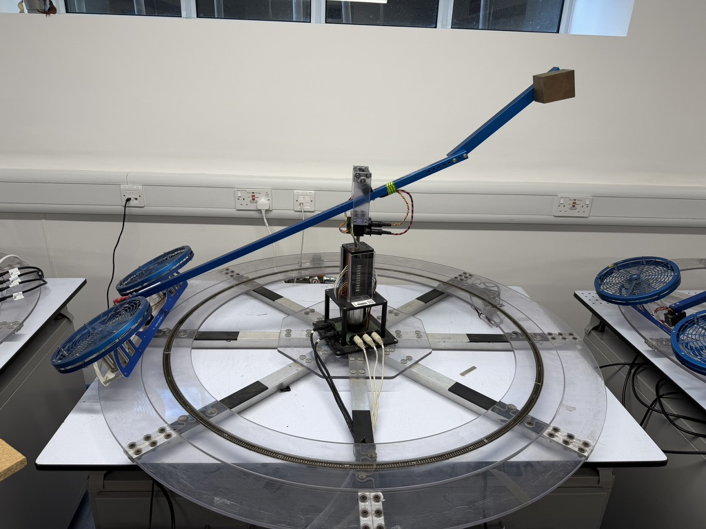
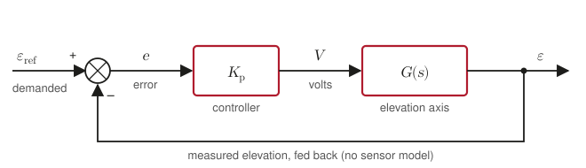
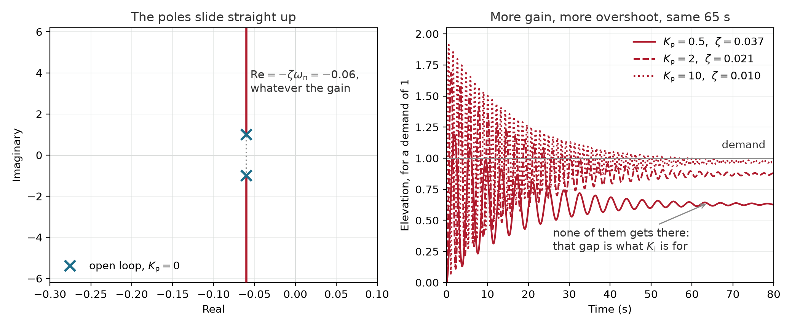

Lecture 1: The design cycle, end to end¶
This session runs through the whole control design cycle once, on a real physical rig. In the lecture, you will watch somebody try (and likely fail) to fly it by hand, measure what it actually does, decide what "good" means, design a controller to meet that, and then watch your own gains fly. Everything after today links to one of those steps.
Learning outcomes
By the end of this week you should be able to:
- describe the control design cycle, and say where in it a given design activity sits;
- identify a second-order model from a measured response, by reading its damping ratio, natural frequency and gain;
- tune a PID controller in simulation to meet a stated requirement;
- explain why a design that meets its requirement in simulation may not meet it on hardware.
Definitions
Spot the tooltips that appear when you hover or hold over the underlined terms? Use these to learn and prompt yourself. Check out the glossary and notation for more detail.
Where we are¶
This unit assumes you have the mathematical fundamentals: Laplace transforms, transfer functions, poles and zeros, the standard second-order form and what \( \zeta \) and \( \omega_\mathrm{n} \) do to a response, Bode plots built from first- and second-order transfer functions, and PID in its parallel form.
The prerequisite diagnostic can help you work out what needs your attention.
Design is cyclic¶
There are many representations of the control system design cycle, the one we'll use here is Dorf and Bishop's, with a couple of additions.
![Seven blocks down the page in three bracketed groups, after Dorf and Bishop's figure 1.17. Group one, establishment of goals, variables to be controlled, and specifications: establish the control goals; identify the variables to be controlled; write the specifications. Group two, system definition and modelling: establish the system configuration; obtain a model of the process, the actuator, and the sensor. Group three, control system design, simulation, and analysis: describe a controller and select key parameters to be adjusted; optimise the parameters and analyse the performance. A return on the left iterates the configuration when the performance does not meet the specifications. When it meets them the flow continues to an eighth block in red, this unit's and not Dorf and Bishop's: test it on the machine. When the machine disagrees, two returns on the right offer two answers: mend the model, going back to the modelling block, or tolerate the mismatch, going back to the controller block, which is robustness. When it agrees, the design is finished.](figures/design-cycle.svg)
Some things to highlight:
The specification comes before the model. If you want to be formal, steps 1 to 3 are done before anything is measured or derived. In practice, things may be messier.
Configuration is shown as a separate decision from the controller. Step 4 chooses what you are going to sense and what you are going to drive; step 6 chooses what to do with them. Picking a sensor commits you to its noise and its resolution long before any gain is chosen. These are often interdependent, hence the cycle.
The loop runs under a fixed specification. Step 7 sends you back to step 4 when the performance is unsatisfactory, but another other way out is to relax a specification in a considered way.
What we'll add¶
Step 8 is ours. Dorf and Bishop iterate within the design: simulate, assess, reconfigure. Hardware testing is implicit, but we're separating it out to make the sim-to-real transition clear.
You can address discrepancies in two ways. The obvious one is to update the model: go back to step 5, measure what you missed, and design again against something closer to reality.
But your model will always contain assumptions, approximations, and uncertainties - they work because the design accounts for exactly that. Later in the course we'll quantify uncertainty and robustness.
Feedback is a trade-off, not a fix¶
Feedback makes system behaviour different, and you choose which problems to have.
Close a feedback loop around a plant and you get:
- disturbance rejection. A gust pushes the output, the error changes, the controller pushes back.
- insensitivity to uncertainty or changes in the plant. The aircraft burns fuel and gets lighter; the controller deals with this.
- the ability to adjust stability, which is the only reason the machine in the room can fly at all.
And you pay, unavoidably:
- sensor noise. Simple feedback acts on what the sensor says, and cannot distinguish noise from signal. Whatever the sensor says, the controller will correct for.
- the loop can go unstable, which the open plant could not do.
- more gain brings more of both. Raising the loop gain suppresses disturbances and amplifies noise. These pull in opposite directions and no amount of cleverness makes them stop.
Hold on to the third of those. Almost every design decision in this unit is a choice about where to spend loop gain, and "turn it up" is only ever half an answer.
The machine¶
The laboratory rig is a Quanser 3-DOF helicopter: a beam on a pivot, two motors and rotors at one end, a counterweight at the other, with the whole assembly free to swing around a vertical column.

It is a tandem-rotor helicopter, and it is worth seeing it as one before you see it as a lab rig. Quanser based the model on the Boeing HC-1B Chinook: two rotors one behind the other, the machine pitching nose-up and nose-down about its centre, and travelling around the rig.
Another way to look at it, if helicopters are not your thing: it is half a quadcopter. A quadcopter's lift is the sum of its four rotors, and it pitches and rolls by driving fore/aft or left/right pairs asymmetrically (yaw is a little more complicated).

The rig moves in three degrees of freedom. Quanser's axis conventions:
| Axis | Symbol | Positive when |
|---|---|---|
| Elevation | \( \varepsilon \) | the body is above horizontal; zero when level |
| Pitch | \( \rho \) | the front motor is higher than the back motor ('front' per Travel direction) |
| Travel | \( \lambda \) | the body rotates counter-clockwise, seen from above |
Three axes, two motor inputs. You do not command elevation, pitch and travel independently: the only quantities you control are the two rotor voltages. Elevation comes from their sum, pitch from their difference, and travel is not directly commanded at all. It happens because pitch tilts the thrust sideways and the machine rotates round after it.
Before anything is switched on
The amplifier's rocker switch on the bench is the emergency stop. If the rig does something you do not like, switch the amplifier off. Know where the switch is before the motors spin.

One of you is going to fly it¶
Not a simulation of it, and not just one axis of it: the machine, all three degrees of freedom, on two joysticks. The claim made at the top of this session is that it cannot be flown by hand. You are about to find out whether that is true.
The task is a simple one: take off and fly for 10 seconds. It ends when you hit an axis limit. We'll vote on how long you think your classmate will last.
In the lecture, here's where things get exciting. You should definitely attend for this one.
Simplifying and modelling¶
Three coupled axes, with one of them not directly controllable, is too much for most people, certainly without much practice, and it's quite an ask to dive into controlling automatically. So let's start by simplifying. Holding pitch and travel still, we'll command elevation alone (our Simulink model uses a separate lateral control loop, but we could just bolt them so they're static).
The elevation axis approximates to a standard second order transfer function:
with \( K \approx 3.4 \) degrees per volt, \( \omega_\mathrm{n} \approx 1.0 \) rad/s and \( \zeta \approx 0.06 \), fitted from a step response taken in the laboratory. You will fit your own numbers shortly and they will not be exactly these.
Read those three numbers and you already know what the machine does. It is stable (positive \( \zeta \)), but \( \zeta = 0.06 \) is almost no damping at all. The oscillation has a period of about six seconds (\( T = \frac{2 \pi}{\omega_\mathrm{n}}\)) and takes around a minute to die away.
Let's close a simple proportional feedback loop around it:

We'll see in the lecture the effect that this has.
Why turning the gain up will not fix it
A sensible first instinct is more proportional gain. Close a proportional loop around this plant and the characteristic polynomial is
\( K_\mathrm{p} \) does not appear in the coefficient of \( s \). The real part of the closed-loop poles (the roots of the characteristic polynomial, i.e. where the characteristic equation = 0) is stuck at \( -\zeta\omega_\mathrm{n} \) whatever you do, so the poles slide straight up a vertical line: faster oscillation, less damping, and a settling time that does not move.
Going from \( K_\mathrm{p} = 0.5 \) to \( K_\mathrm{p} = 10 \) takes the overshoot from 89% to 97% and leaves the settling time at 65 seconds.
Refresher: where the characteristic polynomial comes from
Inspecting the system block diagram, then some algebra. Worth doing once by hand, because every closed loop in this unit is assembled the same way.
Read the block diagram. The junction subtracts, the controller multiplies, and the plant is the second-order TF \( G(s) \):
Substitute inwards until only \( \varepsilon \) and \( \varepsilon_\mathrm{ref} \) are left:
Collect the \( \varepsilon \) terms on one side:
That fraction is the closed-loop transfer function, and it is worth recognising on sight: forward path over one plus the loop. It is the same shape whatever sits in the two blocks.
Put the plant in. With \( G = K\omega_\mathrm{n}^{2} / \left(s^{2} + 2\zeta\omega_\mathrm{n}s + \omega_\mathrm{n}^{2}\right) \), multiply top and bottom by that denominator so the fraction inside the fraction disappears:
The denominator is the characteristic polynomial, and setting it to zero is the characteristic equation. Everything about how this loop behaves on its own is in there; the numerator only scales what comes out.
Compare it with the standard second-order form \( s^{2} + 2\zeta'\omega_\mathrm{n}'s + \omega_\mathrm{n}'^{2} \), where the primes mark the closed loop: the plant's own \( \zeta \) and \( \omega_\mathrm{n} \) are untouched, and tuning will not touch them. The constant term gives \( \omega_\mathrm{n}' \), after which the \( s \) term gives \( \zeta' \). Look at which of the two coefficients \( K_\mathrm{p} \) appears in before you do it.

Move the gain yourself and watch which numbers follow it and which do not.
Worth doing deliberately: take the gain from 0 to 10 and watch \( \zeta' \) fall from 0.060 to 0.010 while \( \omega_\mathrm{n}' \) rises from 1.0 to 5.9 rad/s (the 'prime' ticks (\('\)) denote the closed-loop values). Their product is 0.060 at both ends, and at every gain in between. That product is the real part of the poles, it is the rate the envelope decays at, and it is the reason the settling time reads 65 seconds wherever you put the slider.
Damping has to come from somewhere other than \( K_\mathrm{p} \), which is only focused 'on the present': we need a derivative term, which 'looks into the future' and reduces overshoot; the steady-state error between where it settles and what you asked for needs something with memory: that is the integral term, which 'looks into the past'.
So: what would 'fixed' look like?
A requirement is a design input¶
"Make it fly well" is not a clear requirement. You or a pilot could make subjective comments, and these can get you a long way, but vibes cannot be clearly met, missed, argued about, or worked with analytically, which means they cannot be designed to in the way that we want.
A validatable requirement is a number with a test attached (we'll look at more complex ones later). For a step change in commanded elevation, the ones that matter today are:
| Quantity | Means | Typical form |
|---|---|---|
| Overshoot, \( M_\mathrm{p} \) | How far past the target it goes, as a percentage | "no more than 20%" |
| Settling time, \( t_\mathrm{s} \) | Until it stays within a band of the final value | "within 2% in less than 8 s" |
| Steady-state error | What is left when it stops moving | "less than 1 degree" |
Settling time
Always say which band a settling time refers to. We use 2% throughout, which is what MATLAB's stepinfo and Dorf both default to.
We will agree today's requirement in the room, out loud, before anybody designs anything.
You have a target. You still need a model to design against.
Identifying the plant from what it actually does¶
You could compute \( K \) from the geometry and physics (see the Flight Dynamics part of the unit). We will measure it instead, because the real world, real fabrication, and real wear and tear, change the properties and the behaviour.
We're going to characterise this rig using a system identification approach. The lab resources include some sample data that they use if you don't have your own measurements to-hand (we may upload the readings we take in the lecture too).
Once we've uploaded our in-lecture data and you've downloaded it, open identify_rig.m from the laboratory folder. It walks you through
fitting the rig by hand, then automatically, and saves your model down where
everything else can read it.
Download the laboratory folder
Core expectation: generate a manual second-order fit from a measured response:
- the period of the oscillation gives the damped frequency, \( \omega_\mathrm{d} = 2\pi / T_\mathrm{d} \);
- the ratio of successive peaks gives the damping ratio, by log decrement;
- the steady state value gives the gain.
Going further: tfest will fit a model of whatever order you ask for in
one line. Do the fit by hand first to get a feel for the process and the system, and check the tfest docs to understand how it works.
Variability in models
You will not all get the same numbers from the same response. Where you read the peaks, how much of the tail you trust: all of it affects the answer. Comparing fits and getting a 'feel' for what is 'sensible' is part of the exercise.
Tuning, and then flying¶
To do in the lab
2026: We didn't get to this section in the lecture because I talk too much. Make sure you work through the lab parts 1-3, these will get you familiar with tuning a PID controller on the Quansers.
Continue through the lab resources - in simulation, you tune a PID
controller until it meets the requirement you agreed, then submit your gains to me.
s2_tune checks them and hands you a link with your numbers already filled in (only do this in the lecture - you don't need to submit lab values);
you press Submit yourself, so you see exactly what goes out under your name.
The files are yours, and the recording comes with them, so none of this depends on being in the room when it happens. If you did not get through it in the session, or you want to try a second design, run the session code yourself and submit from there.
The check simulates what the rig does, which is not quite what step does:
the demand is ramped rather than stepped, and the derivative acts on the
measured angle rather than on the error. Expect its numbers to differ from
your own plot by a little. The hardware will differ by more, and that gap is
the last section of this handout.
We'll fly three rounds:
- The extremes, chosen because they misbehave: the most aggressive, the most sluggish, the most integral. Cause and effect before any good answer.
- The cohort average. Often worse than most of its parts, which is worth watching: the average of safe designs is not safe by construction.
- The best few.
Every submission is checked before it reaches the hardware, against the model fitted from the rig on the day, and gains outside the envelope are refused rather than adjusted. Not against your own fit: your fit is an estimate of the machine, and my real machine has to survive the flight. If yours are refused you will be told which limit they missed.
Your name, on screen, in front of everybody
The form asks for a display name, and that is the name on screen when your gains fly. Choose an alias if you would rather. Your University account is recorded by the form so that I know whose submission is whose, but it is never shown to the room.
Where simulation and hardware disagree¶
Your design will meet the requirement in simulation. Some of them will not meet it on the rig. The gap is not carelessness; it's one of our core learning outcomes.
Four reasons it happens, all of which get a week of their own later:
- The model is
wronga simplification. It is a linearisation of one axis of a machine that has three, fitted from one response over a few seconds. - The actuators have limits. The motors saturate. A controller that demands 30 V from a 24 V amplifier won't get what it wants.
- There is noise. The encoder quantises (steps in discrete increments), and derivative action amplifies exactly that.
- The plant moves. Trim shifts, friction changes, and nothing about the rig at 14:00 is quite what it was at 13:00.
The cycle's answer is not to build a better model before designing. It is to design, test, find out where you were wrong, go round again, and account for uncertainty in your design.
That is one full design cycle. In future lectures we'll look at each step in detail.
Summary¶
- Control design is a loop: understand, specify, design, simulate, test, repeat. Every week of this unit is one step of it.
- Feedback is a tradeoff. It gives you disturbance rejection, insensitivity and stabilisation, and it costs you noise on the output and the possibility of instability. More gain brings more of both.
- A requirement is a design input: a number with a test, agreed before the design, not after.
- A model you measured beats a model you assumed (although there is utility in modelling from the fundamentals), and knowing which one you have is important.
- Simulation and hardware often disagree, we can design for this.
How the unit runs
The schedule, the assessment, the laboratory and what a week looks like are on Introduction and logistics.
Further reading¶
- Dorf and Bishop, sections 1.4-1.5: Engineering design, and control system design — the design cycle this unit is built on.
- Dorf and Bishop, sections 4.1-4.2: Feedback control system characteristics; error signal analysis — why feedback at all.
Dorf, R. C. and Bishop, R. H. Modern Control Systems. Pearson. Section numbers are the same in the 12th, 13th and 14th editions; only the page numbers differ. It is in the library, and is for additional study and consolidation, not a substitute for the handout.
-
Goedecke, S. (2026). LLMs reward expertise. ↩
-
Tao, T. (2026). Jacobian conjecture counterexample, a shared ChatGPT conversation, 20 July 2026. ↩
-
Tao, T. and 24 other Fields Medallists (2026). A severe misalignment of AI in mathematics. ↩
-
Schneier, B. (2026). Should you use AI for a task? Here's a simple way to decide. First published in The Guardian. ↩